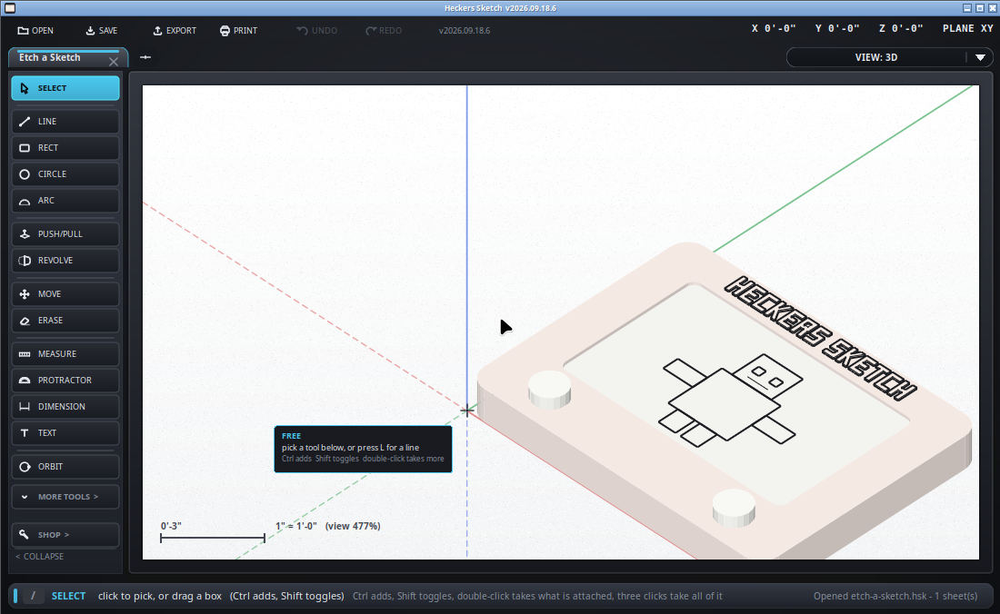

Get about the model.
Keyboard: O - though you will hardly ever want it. Read the next section instead.
The orbit tool does the same with the left button, for a mouse with no middle button and for a trackpad. Hold Shift while dragging it to pan instead of spin.
Hold Ctrl and let go, and the view clicks into the nearest standard direction - one of the twenty-six the view cube offers: six faces square on, twelve edges half way between two, and eight corners. It glides there rather than jumping, so you keep track of what you are looking at.
Spin round to roughly the view you want, then press Ctrl before you release the button. While it is held the status line names where you will land - let go to click into FRONT RIGHT TOP - and if the cube is showing it lights the face it is about to go to. Change your mind and let go of Ctrl first; nothing happens.
Use it when you want a face of the model squared to the screen and did not want to hunt for the exact angle by hand.

Spinning out of PLAN or ISO drops you into the free 3D view first, aimed where you were already looking, so the model does not jump. That is SketchUp's behavior too. V steps back through the standard views - top, front, right and the rest - and I toggles isometric and plan.
/fit, zooms until it all
shows. The one to remember when you are lost./origin puts the view back on 0,0,0./cube puts a view cube in the corner: click a face to look
square on, an edge for the half turn between two, a corner for the
three-quarter view most drawings are read from, or drag it to turn. It also
says which way you are facing, which the VIEW button cannot.Every one of those flies the camera there rather than jumping, and that is on purpose: watching the model turn is what stops you losing your place.